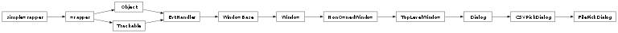

groupbuilder.file_picker_dialog.FilePickDialog
- class groupbuilder.file_picker_dialog.FilePickDialog(parent)[source]
A dialog for picking a CSV file.
This dialog allows users to browse and select a CSV file from their filesystem.
__init__(parent)Initialize the FilePickDialog.
on_done(event)Handle the done button click event.
on_close_window(event)Handle the window close event.
- __init__(parent)[source]
Initialize the FilePickDialog.
- Parameters:
parent (wx.Window) – The parent window
- Returns:
None
- Return type:
None
Methods
AcceptsFocus(self)AcceptsFocusFromKeyboard(self)AcceptsFocusRecursively(self)AddChild(self, child)AddFilter(filter)Add an event filter whose FilterEvent() method will be called for each and every event processed by wxWidgets.
AddMainButtonId(id)Adds an identifier to be regarded as a main button for the non- scrolling area of a dialog.
AddPendingEvent(event)Post an event to be processed later.
AdjustForLayoutDirection(x, width, widthTotal)Mirror coordinates for RTL layout if this window uses it and if the mirroring is not done automatically like Win32.
AlwaysShowScrollbars([hflag, vflag])Call this function to force one or both scrollbars to be always shown, even if the window is big enough to show its entire contents without scrolling.
AssociateHandle(handle)Associate the window with a new native handle
BeginRepositioningChildren()Prepare for changing positions of multiple child windows.
Bind(event, handler[, source, id, id2])Bind an event to an event handler.
CacheBestSize(size)Sets the cached best size value.
CanAcceptFocus()Can this window have focus right now?
CanAcceptFocusFromKeyboard()Can this window be assigned focus from keyboard right now?
CanDoLayoutAdaptation()Returns true if this dialog can and should perform layout adaptation using DoLayoutAdaptation(), usually if the dialog is too large to fit on the display.
CanScroll(orient)Returns true if this window can have a scroll bar in this orientation.
CanSetTransparent()Returns true if the platform supports making the window translucent.
CaptureMouse()Directs all mouse input to this window.
Center([dir])A synonym for Centre().
CenterOnParent([dir])A synonym for CentreOnParent().
CenterOnScreen([direction])A synonym for CentreOnScreen().
Centre([direction])Centres the dialog box on the display.
CentreOnParent([direction])Centres the window on its parent.
CentreOnScreen([direction])Centres the window on screen.
ClearBackground()Clears the window by filling it with the current background colour.
ClientToScreen(->)Converts to screen coordinates from coordinates relative to this window.
ClientToWindowSize(size)Converts client area size size to corresponding window size.
Close([force])This function simply generates a wxCloseEvent whose handler usually tries to close the window.
Connect(id, lastId, eventType, func)Make an entry in the dynamic event table for an event binding.
ConvertDialogPointToPixels(**kw)ConvertDialogSizeToPixels(**kw)ConvertDialogToPixels(-> Point)Converts a point or size from dialog units to pixels.
ConvertPixelsToDialog(-> Point)Converts a point or size from pixels to dialog units.
Create(parent[, id, title, pos, size, ...])Used for two-step dialog box construction.
CreateAccessible()Override to create a specific accessible object.
CreateButtonSizer(flags)Creates a sizer with standard buttons.
CreateSeparatedButtonSizer(flags)Creates a sizer with standard buttons using CreateButtonSizer() separated from the rest of the dialog contents by a horizontal wxStaticLine.
CreateSeparatedSizer(sizer)Returns the sizer containing the given one with a separating wxStaticLine if necessarily.
CreateStdDialogButtonSizer(flags)Creates a wxStdDialogButtonSizer with standard buttons.
CreateTextSizer(message[, widthMax])Splits text up at newlines and places the lines into wxStaticText objects with the specified maximum width in a vertical wxBoxSizer.
DLG_UNIT(dlg_unit)A convenience wrapper for
ConvertDialogToPixels().DeletePendingEvents()Deletes all events queued on this event handler using QueueEvent() or AddPendingEvent().
Destroy(self)DestroyChildren()Destroys all children of a window.
DestroyLater()Schedules the window to be destroyed in the near future.
Disable()Disables the window.
DisableFocusFromKeyboard()Disable giving focus to this window using the keyboard navigation keys.
Disconnect(id[, lastId, eventType, func])Remove an event binding by removing its entry in the dynamic event table.
DissociateHandle()Dissociate the current native handle from the window
DoEnable(self, enable)DoFreeze(self)DoGetBestClientSize(self)DoGetBestSize(self)DoGetClientSize(self)DoGetPosition(self)DoGetSize(self)DoLayoutAdaptation()Performs layout adaptation, usually if the dialog is too large to fit on the display.
DoMoveWindow(self, x, y, width, height)DoSetClientSize(self, width, height)DoSetSize(self, x, y, width, height, sizeFlags)DoSetSizeHints(self, minW, minH, maxW, maxH, ...)DoSetWindowVariant(self, variant)DoThaw(self)DoUpdateWindowUI(event)Does the window-specific updating after processing the update event.
DragAcceptFiles(accept)Enables or disables eligibility for drop file events (OnDropFiles).
Enable([enable])Enable or disable the window for user input.
EnableCloseButton([enable])Enables or disables the Close button (most often in the right upper corner of a dialog) and the Close entry of the system menu (most often in the left upper corner of the dialog).
EnableFullScreenView([enable, style])Enables the zoom button to toggle full screen mode.
EnableLayoutAdaptation(enable)A static function enabling or disabling layout adaptation for all dialogs.
EnableMaximizeButton([enable])Enables or disables the Maximize button (in the right or left upper corner of a frame or dialog).
EnableMinimizeButton([enable])Enables or disables the Minimize button (in the right or left upper corner of a frame or dialog).
EnableTouchEvents(eventsMask)Request generation of touch events for this window.
EnableVisibleFocus(self, enabled)EndModal(retCode)Ends a modal dialog, passing a value to be returned from the ShowModal() invocation.
EndRepositioningChildren()Fix child window positions after setting all of them at once.
FindFocus()Finds the window or control which currently has the keyboard focus.
FindWindow(-> Window)Find a child of this window, by id.
FindWindowById(id[, parent])Find the first window with the given id.
FindWindowByLabel(label[, parent])Find a window by its label.
FindWindowByName(name[, parent])Find a window by its name (as given in a window constructor or Create() function call).
Fit()Sizes the window to fit its best size.
FitInside()Similar to Fit(), but sizes the interior (virtual) size of a window.
Freeze()Freezes the window or, in other words, prevents any updates from taking place on screen, the window is not redrawn at all.
FromDIP(...)Convert DPI-independent pixel values to the value in pixels appropriate for the current toolkit.
FromPhys(...)Convert from physical pixels to logical pixels.
GetAcceleratorTable()Gets the accelerator table for this window.
GetAccessible()Returns the accessible object for this window, if any.
GetAffirmativeId()Gets the identifier of the button which works like standard OK button in this dialog.
GetAutoLayout()Returns true if Layout() is called automatically when the window is resized.
GetBackgroundColour()Returns the background colour of the window.
GetBackgroundStyle()Returns the background style of the window.
GetBestHeight(width)Returns the best height needed by this window if it had the given width.
GetBestSize()This functions returns the best acceptable minimal size for the window.
GetBestVirtualSize()Return the largest of ClientSize and BestSize (as determined by a sizer, interior children, or other means)
GetBestWidth(height)Returns the best width needed by this window if it had the given height.
GetBorder(-> Border)Get the window border style from the given flags: this is different from simply doing flags & wxBORDER_MASK because it uses GetDefaultBorder() to translate wxBORDER_DEFAULT to something reasonable.
GetCapture()Returns the currently captured window.
GetCaret()Returns the caret() associated with the window.
GetCharHeight()Returns the character height for this window.
GetCharWidth()Returns the average character width for this window.
GetChildren()Returns a reference to the list of the window's children.
GetClassDefaultAttributes([variant])GetClassInfo()This virtual function is redefined for every class that requires run- time type information, when using the wxDECLARE_CLASS macro (or similar).
GetClassName()Returns the class name of the C++ class using wxRTTI.
GetClientAreaOrigin(self)GetClientRect()Get the client rectangle in window (i.e. client) coordinates.
GetClientSize()Returns the size of the window 'client area' in pixels.
GetConstraints()Returns a pointer to the window's layout constraints, or NULL if there are none.
GetContainingSizer()Returns the sizer of which this window is a member, if any, otherwise NULL.
GetContentProtection()Get the current content protection of the window.
GetContentScaleFactor()Returns the factor mapping logical pixels of this window to physical pixels.
GetContentWindow()Override this to return a window containing the main content of the dialog.
GetCursor()Return the cursor associated with this window.
GetDPI()Return the DPI of the display used by this window.
GetDPIScaleFactor()Returns the ratio of the DPI used by this window to the standard DPI.
GetDefaultAttributes()Currently this is the same as calling wxWindow::GetClassDefaultAttributes(wxWindow::GetWindowVariant()).
GetDefaultBorder(self)GetDefaultBorderForControl(self)GetDefaultItem()Returns a pointer to the button which is the default for this window, or NULL.
GetDefaultSize()Get the default size for a new top level window.
GetDropTarget()Returns the associated drop target, which may be NULL.
GetEffectiveMinSize()Merges the window's best size into the min size and returns the result.
GetEscapeId()Gets the identifier of the button to map presses of ESC button to.
GetEventHandler()Returns the event handler for this window.
GetEvtHandlerEnabled()Returns true if the event handler is enabled, false otherwise.
GetExtraStyle()Returns the extra style bits for the window.
GetFont()Returns the font for this window.
GetForegroundColour()Returns the foreground colour of the window.
GetFullTextExtent(string[, font])Gets the dimensions of the string as it would be drawn on the window with the currently selected font.
GetGrandParent()Returns the grandparent of a window, or NULL if there isn't one.
GetGtkWidget()GetHandle()Returns the platform-specific handle of the physical window.
GetHelpText()Gets the help text to be used as context-sensitive help for this window.
GetHelpTextAtPoint(point, origin)Gets the help text to be used as context-sensitive help for this window.
GetIcon()Returns the standard icon of the window.
GetIcons()Returns all icons associated with the window, there will be none of them if neither SetIcon() nor SetIcons() had been called before.
GetId()Returns the identifier of the window.
GetLabel()Generic way of getting a label from any window, for identification purposes.
GetLayoutAdaptationDone()Returns true if the dialog has been adapted, usually by making it scrollable to work with a small display.
GetLayoutAdaptationLevel()Gets a value representing the aggressiveness of search for buttons and sizers to be in the non-scrolling part of a layout-adapted dialog.
GetLayoutAdaptationMode()Gets the adaptation mode, overriding the global adaptation flag.
GetLayoutAdapter()A static function getting the current layout adapter object.
GetLayoutDirection()Returns the layout direction for this window, Note that wxLayout_Default is returned if layout direction is not supported.
GetMainButtonIds()Returns an array of identifiers to be regarded as the main buttons for the non-scrolling area of a dialog.
GetMainWindowOfCompositeControl(self)GetMaxClientSize()Returns the maximum size of window's client area.
GetMaxHeight()Returns the vertical component of window maximal size.
GetMaxSize()Returns the maximum size of the window.
GetMaxWidth()Returns the horizontal component of window maximal size.
GetMinClientSize()Returns the minimum size of window's client area, an indication to the sizer layout mechanism that this is the minimum required size of its client area.
GetMinHeight()Returns the vertical component of window minimal size.
GetMinSize()Returns the minimum size of the window, an indication to the sizer layout mechanism that this is the minimum required size.
GetMinWidth()Returns the horizontal component of window minimal size.
GetName()Returns the window's name.
GetNextHandler()Returns the pointer to the next handler in the chain.
GetNextSibling()Returns the next window after this one among the parent's children or NULL if this window is the last child.
GetOrCreateAccessible()Returns the accessible object, calling CreateAccessible if necessary.
GetParent()Returns the parent of the window, or NULL if there is no parent.
GetPopupMenuSelectionFromUser(-> int)This function shows a popup menu at the given position in this window and returns the selected id.
GetPosition()This gets the position of the window in pixels, relative to the parent window for the child windows or relative to the display origin for the top level windows.
GetPositionTuple(**kw)GetPrevSibling()Returns the previous window before this one among the parent's children or NULL if this window is the first child.
GetPreviousHandler()Returns the pointer to the previous handler in the chain.
GetRect()Returns the position and size of the window as a wxRect object.
GetRefData()Returns the wxObject::m_refData pointer, i.e. the data referenced by this object.
GetReturnCode()Gets the return code for this window.
GetScreenPosition()Returns the window position in screen coordinates, whether the window is a child window or a top level one.
GetScreenRect()Returns the position and size of the window on the screen as a wxRect object.
GetScrollPos(orientation)Returns the built-in scrollbar position.
GetScrollRange(orientation)Returns the built-in scrollbar range.
GetScrollThumb(orientation)Returns the built-in scrollbar thumb size.
GetSize()Returns the size of the entire window in pixels, including title bar, border, scrollbars, etc.
GetSizeTuple(**kw)GetSizer()Returns the sizer associated with the window by a previous call to SetSizer(), or NULL.
GetTextExtent(string)Gets the dimensions of the string as it would be drawn on the window with the currently selected font.
GetThemeEnabled()Returns true if the window uses the system theme for drawing its background.
GetTitle()Gets a string containing the window title.
GetTmpDefaultItem()GetToolTip()Get the associated tooltip or NULL if none.
GetToolTipText()Get the text of the associated tooltip or empty string if none.
GetTopLevelParent()Returns the first ancestor of this window which is a top-level window.
GetUpdateClientRect()Get the update rectangle bounding box in client coords.
GetUpdateRegion()Returns the region specifying which parts of the window have been damaged.
GetValidator(self)GetVirtualSize()This gets the virtual size of the window in pixels.
GetVirtualSizeTuple(**kw)GetWindowBorderSize()Returns the size of the left/right and top/bottom borders of this window in x and y components of the result respectively.
GetWindowStyle()See GetWindowStyleFlag() for more info.
GetWindowStyleFlag()Gets the window style that was passed to the constructor or Create() method.
GetWindowVariant()Returns the value previously passed to SetWindowVariant().
HandleAsNavigationKey(event)This function will generate the appropriate call to Navigate() if the key event is one normally used for keyboard navigation and return true in this case.
HandleWindowEvent(event)Shorthand for:
HasCapture()Returns true if this window has the current mouse capture.
HasExtraStyle(exFlag)Returns true if the window has the given exFlag bit set in its extra styles.
HasFlag(flag)Returns true if the window has the given flag bit set.
HasFocus()Returns true if the window (or in case of composite controls, its main child window) has focus.
HasMultiplePages()This method should be overridden to return true if this window has multiple pages.
HasScrollbar(orient)Returns true if this window currently has a scroll bar for this orientation.
HasTransparentBackground(self)Hide()Equivalent to calling wxWindow::Show(false).
HideWithEffect(effect[, timeout])This function hides a window, like Hide(), but using a special visual effect if possible.
HitTest(-> HitTest)Return where the given point lies, exactly.
Iconize([iconize])Iconizes or restores the dialog.
InformFirstDirection(self, direction, size, ...)InheritAttributes(self)InheritsBackgroundColour()Return true if this window inherits the background colour from its parent.
InheritsForegroundColour()Return true if this window inherits the foreground colour from its parent.
InitDialog(self)InvalidateBestSize()Resets the cached best size value so it will be recalculated the next time it is needed.
IsActive()Returns true if this window is currently active, i.e. if the user is currently working with it.
IsAlwaysMaximized()Returns true if this window is expected to be always maximized, either due to platform policy or due to local policy regarding particular class.
IsBeingDeleted()Returns true if this window is in process of being destroyed.
IsDescendant(win)Check if the specified window is a descendant of this one.
IsDoubleBuffered()Returns true if the window contents is double-buffered by the system, i.e. if any drawing done on the window is really done on a temporary backing surface and transferred to the screen all at once later.
IsEnabled()Returns true if the window is enabled, i.e. if it accepts user input, false otherwise.
IsExposed(-> bool -> bool -> bool)Returns true if the given point or rectangle area has been exposed since the last repaint.
IsFocusable()Can this window itself have focus?
IsFrozen()Returns true if the window is currently frozen by a call to Freeze().
IsFullScreen()Returns true if the window is in fullscreen mode.
IsIconized()Returns true if the dialog box is iconized.
IsLayoutAdaptationEnabled()A static function returning true if layout adaptation is enabled for all dialogs.
IsMainButtonId(id)Returns true if id is in the array of identifiers to be regarded as the main buttons for the non-scrolling area of a dialog.
IsMaximized()Returns true if the window is maximized.
IsModal()Returns true if the dialog box is modal, false otherwise.
IsRetained()Returns true if the window is retained, false otherwise.
IsSameAs(obj)Returns true if this object has the same data pointer as obj.
IsScrollbarAlwaysShown(orient)Return whether a scrollbar is always shown.
IsShown()Returns true if the window is shown, false if it has been hidden.
IsShownOnScreen()Returns true if the window is physically visible on the screen, i.e. it is shown and all its parents up to the toplevel window are shown as well.
IsThisEnabled()Returns true if this window is intrinsically enabled, false otherwise, i.e. if Enable() Enable(false) had been called.
IsTopLevel()Returns true if the given window is a top-level one.
IsTransparentBackgroundSupported([reason])Checks whether using transparent background might work.
IsUnlinked()Returns true if the next and the previous handler pointers of this event handler instance are NULL.
Layout()Lays out the children using the window sizer or resizes the only child of the window to cover its entire area.
LineDown()Same as ScrollLines (1).
LineUp()Same as ScrollLines (-1).
Lower()Lowers the window to the bottom of the window hierarchy (Z-order).
MacGetMetalAppearance()MacGetTopLevelWindowRef()MacGetUnifiedAppearance()MacIsWindowScrollbar(sb)Is the given widget one of this window's built-in scrollbars? Only applicable on Mac.
MacSetMetalAppearance(on)Maximize([maximize])Maximizes or restores the window.
Move()Moves the window to the given position.
MoveAfterInTabOrder(win)Moves this window in the tab navigation order after the specified win.
MoveBeforeInTabOrder(win)Same as MoveAfterInTabOrder() except that it inserts this window just before win instead of putting it right after it.
MoveXY(**kw)Navigate([flags])Performs a keyboard navigation action starting from this window.
NavigateIn([flags])Performs a keyboard navigation action inside this window.
NewControlId([count])Create a new ID or range of IDs that are not currently in use.
OSXIsModified()Returns the current modified state of the wxTopLevelWindow on macOS.
OSXSetModified(modified)This function sets the wxTopLevelWindow's modified state on macOS, which currently draws a black dot in the wxTopLevelWindow's close button.
OnInternalIdle(self)PageDown()Same as ScrollPages (1).
PageUp()Same as ScrollPages (-1).
PopEventHandler([deleteHandler])Removes and returns the top-most event handler on the event handler stack.
PopupMenu(-> bool)Pops up the given menu at the specified coordinates, relative to this window, and returns control when the user has dismissed the menu.
PostCreate(**kw)PostSizeEvent()Posts a size event to the window.
PostSizeEventToParent()Posts a size event to the parent of this window.
ProcessEvent(self, event)ProcessEventLocally(event)Try to process the event in this handler and all those chained to it.
ProcessPendingEvents()Processes the pending events previously queued using QueueEvent() or AddPendingEvent(); you must call this function only if you are sure there are pending events for this handler, otherwise a wxCHECK will fail.
ProcessWindowEvent(event)Convenient wrapper for ProcessEvent().
ProcessWindowEventLocally(event)Wrapper for wxEvtHandler::ProcessEventLocally().
PushEventHandler(handler)Pushes this event handler onto the event stack for the window.
QueueEvent(event)Queue event for a later processing.
Raise()Raises the window to the top of the window hierarchy (Z-order).
Ref(clone)Makes this object refer to the data in clone.
Refresh([eraseBackground, rect])Causes this window, and all of its children recursively, to be repainted.
RefreshRect(rect[, eraseBackground])Redraws the contents of the given rectangle: only the area inside it will be repainted.
RegisterHotKey(hotkeyId, modifiers, ...)Registers a system wide hotkey.
ReleaseMouse()Releases mouse input captured with CaptureMouse().
RemoveChild(self, child)RemoveEventHandler(handler)Find the given handler in the windows event handler stack and removes (but does not delete) it from the stack.
RemoveFilter(filter)Remove a filter previously installed with AddFilter().
Reparent(newParent)Reparents the window, i.e. the window will be removed from its current parent window (e.g.
RequestUserAttention([flags])Use a system-dependent way to attract users attention to the window when it is in background.
Restore()Restore a previously iconized or maximized window to its normal state.
RestoreToGeometry(ser)Restores the window to the previously saved geometry.
SafelyProcessEvent(event)Processes an event by calling ProcessEvent() and handles any exceptions that occur in the process.
SaveGeometry(ser)Save the current window geometry to allow restoring it later.
ScreenToClient(->)Converts from screen to client window coordinates.
ScrollLines(lines)Scrolls the window by the given number of lines down (if lines is positive) or up.
ScrollPages(pages)Scrolls the window by the given number of pages down (if pages is positive) or up.
ScrollWindow(dx, dy[, rect])Physically scrolls the pixels in the window and move child windows accordingly.
SendDestroyEvent()Generate wxWindowDestroyEvent for this window.
SendIdleEvents(event)Send idle event to window and all subwindows.
SendSizeEvent([flags])This function sends a dummy size event to the window allowing it to re-layout its children positions.
SendSizeEventToParent([flags])Safe wrapper for GetParent()->SendSizeEvent().
SetAcceleratorTable(accel)Sets the accelerator table for this window.
SetAccessible(accessible)Sets the accessible for this window.
SetAffirmativeId(id)Sets the identifier to be used as OK button.
SetAutoLayout(autoLayout)Determines whether the Layout() function will be called automatically when the window is resized.
SetBackgroundColour(colour)Sets the background colour of the window.
SetBackgroundStyle(style)Sets the background style of the window.
SetCanFocus(self, canFocus)SetCaret(caret)Sets the caret() associated with the window.
SetClientRect(rect)SetClientSize(-> None)This sets the size of the window client area in pixels.
SetConstraints(constraints)Sets the window to have the given layout constraints.
SetContainingSizer(sizer)Used by wxSizer internally to notify the window about being managed by the given sizer.
SetContentProtection(contentProtection)Set content protection for the window.
SetCursor(cursor)Sets the window's cursor.
SetDefaultItem(win)Changes the default item for the panel, usually win is a button.
SetDimensions(x, y, width, height[, sizeFlags])SetDoubleBuffered(on)Turn on or off double buffering of the window if the system supports it.
SetDropTarget(target)Associates a drop target with this window.
SetEscapeId(id)Sets the identifier of the button which should work like the standard "Cancel" button in this dialog.
SetEventHandler(handler)Sets the event handler for this window.
SetEvtHandlerEnabled(enabled)Enables or disables the event handler.
SetExtraStyle(exStyle)Sets the extra style bits for the window.
SetFocus()This sets the window to receive keyboard input.
SetFocusFromKbd()This function is called by wxWidgets keyboard navigation code when the user gives the focus to this window from keyboard (e.g. using TAB key).
SetFont(font)Sets the font for this window.
SetForegroundColour(colour)Sets the foreground colour of the window.
SetHelpText(helpText)Sets the help text to be used as context-sensitive help for this window.
SetIcon(icon)Sets the icon for this dialog.
SetIcons(icons)Sets the icons for this dialog.
SetId(winid)Sets the identifier of the window.
SetInitialSize([size])A smart SetSize that will fill in default size components with the window's best size values.
SetLabel(label)Sets the window's label.
SetLayoutAdaptationDone(done)Marks the dialog as having been adapted, usually by making it scrollable to work with a small display.
SetLayoutAdaptationLevel(level)Sets the aggressiveness of search for buttons and sizers to be in the non-scrolling part of a layout-adapted dialog.
SetLayoutAdaptationMode(mode)Sets the adaptation mode, overriding the global adaptation flag.
SetLayoutAdapter(adapter)A static function for setting the current layout adapter object, returning the old adapter.
SetLayoutDirection(dir)Sets the layout direction for this window.
SetMaxClientSize(size)Sets the maximum client size of the window, to indicate to the sizer layout mechanism that this is the maximum possible size of its client area.
SetMaxSize(size)A simpler interface for setting the size hints than SetSizeHints().
SetMinClientSize(size)Sets the minimum client size of the window, to indicate to the sizer layout mechanism that this is the minimum required size of window's client area.
SetMinSize(size)A simpler interface for setting the size hints than SetSizeHints().
SetName(name)Sets the window's name.
SetNextHandler(handler)wxWindows cannot be used to form event handler chains; this function thus will assert when called.
SetOwnBackgroundColour(colour)Sets the background colour of the window but prevents it from being inherited by the children of this window.
SetOwnFont(font)Sets the font of the window but prevents it from being inherited by the children of this window.
SetOwnForegroundColour(colour)Sets the foreground colour of the window but prevents it from being inherited by the children of this window.
SetPalette(pal)SetPosition(pt)Moves the window to the specified position.
SetPreviousHandler(handler)wxWindows cannot be used to form event handler chains; this function thus will assert when called.
SetRect(rect)SetRefData(data)Sets the wxObject::m_refData pointer.
SetRepresentedFilename(filename)Sets the file name represented by this wxTopLevelWindow.
SetReturnCode(retCode)Sets the return code for this window.
SetScrollPos(orientation, pos[, refresh])Sets the position of one of the built-in scrollbars.
SetScrollbar(orientation, position, ...[, ...])Sets the scrollbar properties of a built-in scrollbar.
SetShape(-> bool)If the platform supports it, sets the shape of the window to that depicted by region.
SetSize(-> None -> None)Sets the size of the window in pixels.
SetSizeHints()Allows specification of minimum and maximum window sizes, and window size increments.
SetSizeHintsSz(**kw)SetSizeWH(**kw)SetSizer(sizer[, deleteOld])Sets the window to have the given layout sizer.
SetSizerAndFit(sizer[, deleteOld])Associate the sizer with the window and set the window size and minimal size accordingly.
SetThemeEnabled(enable)This function tells a window if it should use the system's "theme" code to draw the windows' background instead of its own background drawing code.
SetTitle(title)Sets the window title.
SetTmpDefaultItem(win)SetToolTip()Attach a tooltip to the window.
SetToolTipString(**kw)SetTransparent(alpha)If the platform supports it will set the window to be translucent.
SetValidator(self, validator)SetVirtualSize()Sets the virtual size of the window in pixels.
SetVirtualSizeWH(**kw)SetWindowStyle(style)See SetWindowStyleFlag() for more info.
SetWindowStyleFlag(style)Sets the style of the window.
SetWindowVariant(variant)Chooses a different variant of the window display to use.
ShouldInheritColours(self)ShouldPreventAppExit()This virtual function is not meant to be called directly but can be overridden to return false (it returns true by default) to allow the application to close even if this, presumably not very important, window is still opened.
Show([show])Hides or shows the dialog.
ShowFullScreen(show[, style])Depending on the value of show parameter the window is either shown full screen or restored to its normal state.
ShowModal()Shows an application-modal dialog.
ShowWindowModal()Shows a dialog modal to the parent top level window only.
ShowWithEffect(effect[, timeout])This function shows a window, like Show(), but using a special visual effect if possible.
ShowWithoutActivating()Show the wxTopLevelWindow, but do not give it keyboard focus.
Thaw()Re-enables window updating after a previous call to Freeze().
ToDIP(...)Convert pixel values of the current toolkit to DPI-independent pixel values.
ToPhys(...)Convert from logical pixels to physical pixels.
ToggleWindowStyle(flag)Turns the given flag on if it's currently turned off and vice versa.
TransferDataFromWindow(self)TransferDataToWindow(self)TryAfter(self, event)TryBefore(self, event)UnRef()Decrements the reference count in the associated data, and if it is zero, deletes the data.
UnShare()This is the same of AllocExclusive() but this method is public.
Unbind(event[, source, id, id2, handler])Disconnects the event handler binding for event from self.
Unlink()Unlinks this event handler from the chain it's part of (if any); then links the "previous" event handler to the "next" one (so that the chain won't be interrupted).
UnregisterHotKey(hotkeyId)Unregisters a system wide hotkey.
UnreserveControlId(id[, count])Unreserve an ID or range of IDs that was reserved by NewControlId().
UnsetToolTip()Unset any existing tooltip.
Update()Calling this method immediately repaints the invalidated area of the window and all of its children recursively (this normally only happens when the flow of control returns to the event loop).
UpdateWindowUI([flags])This function sends one or more wxUpdateUIEvent to the window.
UseBackgroundColour()Return true if a background colour has been set for this window.
UseBgCol()Return true if a background colour has been set for this window.
UseForegroundColour()Return true if a foreground colour has been set for this window.
Validate(self)WarpPointer(x, y)Moves the pointer to the given position on the window.
WindowToClientSize(size)Converts window size size to corresponding client area size In other words, the returned value is what would GetClientSize() return if this window had given window size.
__init__(parent)Initialize the FilePickDialog.
on_close_window(event)Handle the window close event.
on_done(event)Handle the done button click event.
Attributes
AcceleratorTableGetAcceleratorTable() -> AcceleratorTable
AffirmativeIdGetAffirmativeId() -> int
AutoLayoutGetAutoLayout() -> bool
BackgroundColourGetBackgroundColour() -> Colour
BackgroundStyleGetBackgroundStyle() -> BackgroundStyle
BestSizeGetBestSize() -> Size
BestVirtualSizeGetBestVirtualSize() -> Size
BorderGetBorder(flags) -> Border GetBorder() -> Border
CaretGetCaret() -> Caret
CharHeightGetCharHeight() -> int
CharWidthGetCharWidth() -> int
ChildrenGetChildren() -> WindowList
ClassInfoGetClassInfo() -> ClassInfo
ClassNameGetClassName() -> Char
ClientAreaOriginGetClientAreaOrigin() -> Point
ClientRectGetClientRect() -> Rect
ClientSizeGetClientSize() -> Size
ConstraintsGetConstraints() -> LayoutConstraints
ContainingSizerGetContainingSizer() -> Sizer
ContentWindowGetContentWindow() -> Window
CursorGetCursor() -> Cursor
DefaultAttributesGetDefaultAttributes() -> VisualAttributes
DefaultItemGetDefaultItem() -> Window
DropTargetGetDropTarget() -> DropTarget
EffectiveMinSizeGetEffectiveMinSize() -> Size
EnabledIsEnabled() -> bool
EscapeIdGetEscapeId() -> int
EventHandlerGetEventHandler() -> EvtHandler
EvtHandlerEnabledGetEvtHandlerEnabled() -> bool
ExtraStyleGetExtraStyle() -> long
FontGetFont() -> Font
ForegroundColourGetForegroundColour() -> Colour
GrandParentGetGrandParent() -> Window
HandleGetHandle() -> UIntPtr
HelpTextGetHelpText() -> String
IconGetIcon() -> Icon
IdGetId() -> WindowID
LabelGetLabel() -> String
LayoutAdaptationDoneGetLayoutAdaptationDone() -> bool
LayoutAdaptationLevelGetLayoutAdaptationLevel() -> int
LayoutAdaptationModeGetLayoutAdaptationMode() -> DialogLayoutAdaptationMode
LayoutDirectionGetLayoutDirection() -> LayoutDirection
MacMetalAppearanceMacGetMetalAppearance() -> bool
MainButtonIdsGetMainButtonIds() -> ArrayInt
MaxClientSizeGetMaxClientSize() -> Size
MaxHeightGetMaxHeight() -> int
MaxSizeGetMaxSize() -> Size
MaxWidthGetMaxWidth() -> int
MinClientSizeGetMinClientSize() -> Size
MinHeightGetMinHeight() -> int
MinSizeGetMinSize() -> Size
MinWidthGetMinWidth() -> int
NameGetName() -> String
NextHandlerGetNextHandler() -> EvtHandler
OSXModifiedOSXIsModified() -> bool
ParentGetParent() -> Window
PositionGetPosition() -> Point
PreviousHandlerGetPreviousHandler() -> EvtHandler
RectGetRect() -> Rect
RefDataGetRefData() -> ObjectRefData
ReturnCodeGetReturnCode() -> int
ScreenPositionGetScreenPosition() -> Point
ScreenRectGetScreenRect() -> Rect
ShownIsShown() -> bool
SizeGetSize() -> Size
SizerGetSizer() -> Sizer
ThemeEnabledGetThemeEnabled() -> bool
TitleGetTitle() -> String
TmpDefaultItemGetTmpDefaultItem() -> Window
ToolTipGetToolTip() -> ToolTip
TopLevelIsTopLevel() -> bool
TopLevelParentGetTopLevelParent() -> Window
UpdateClientRectGetUpdateClientRect() -> Rect
UpdateRegionGetUpdateRegion() -> Region
ValidatorGetValidator() -> Validator
VirtualSizeGetVirtualSize() -> Size
WindowStyleGetWindowStyle() -> long
WindowStyleFlagGetWindowStyleFlag() -> long
WindowVariantGetWindowVariant() -> WindowVariant